Predaj, novostavba - Zlaté Moravce (1245-12-AFI)
Zlaté Moravce
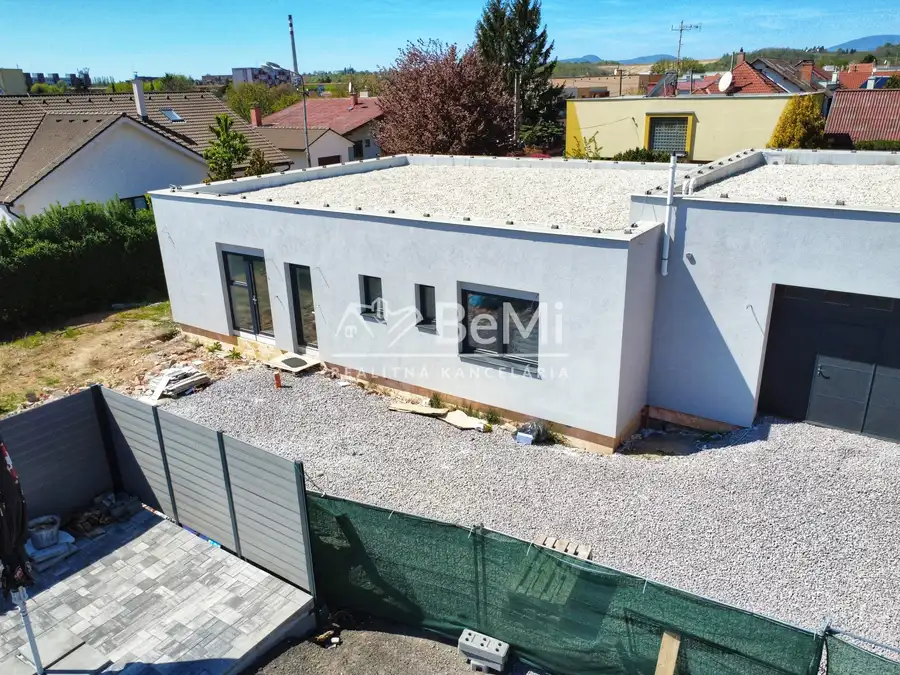
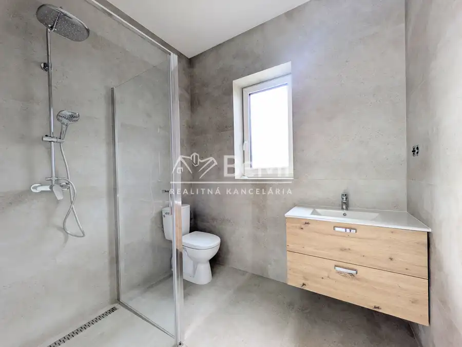
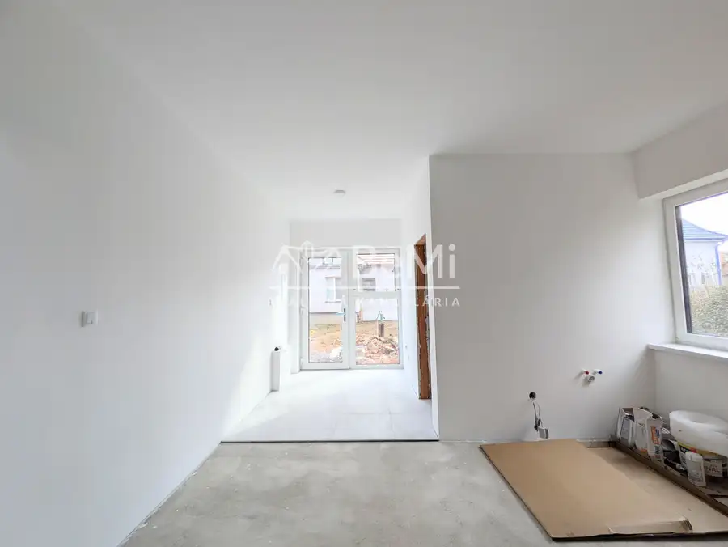
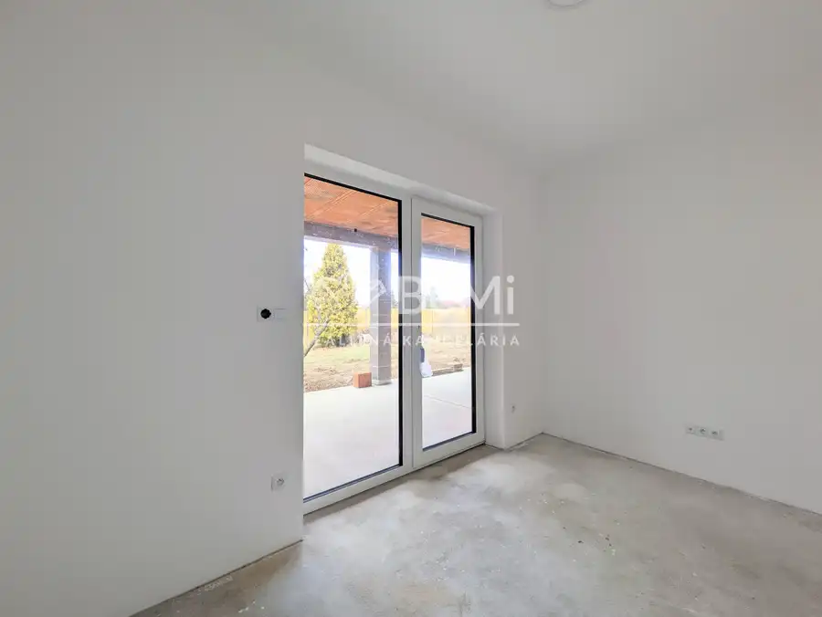
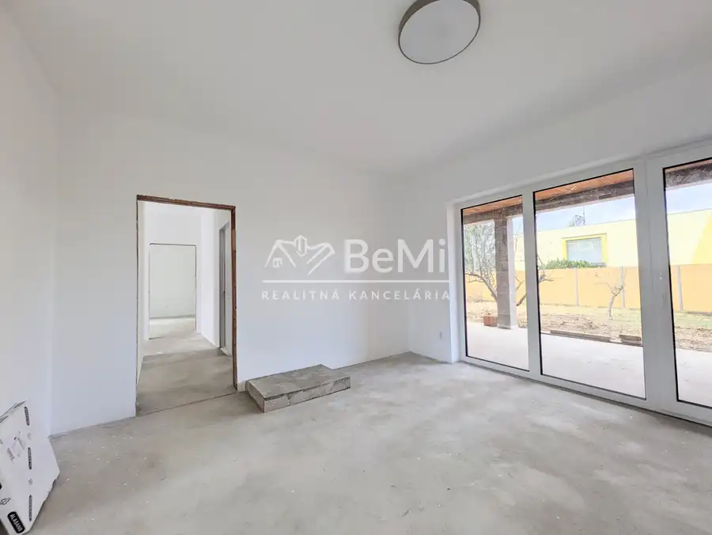
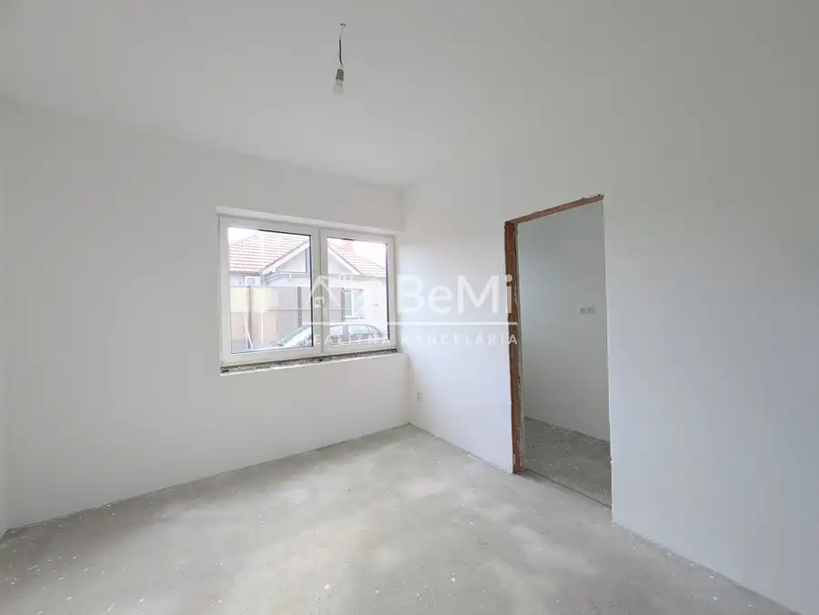
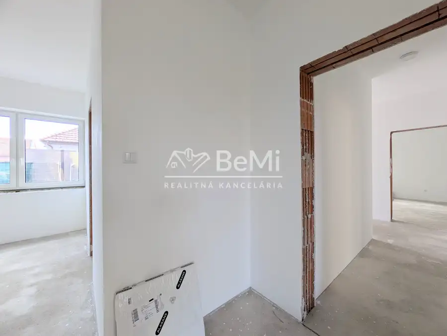
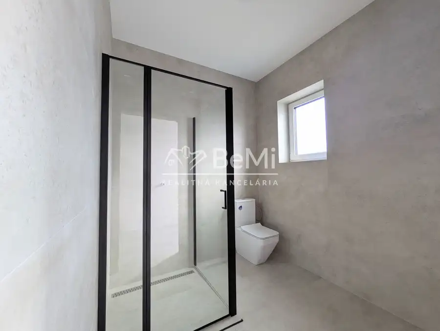
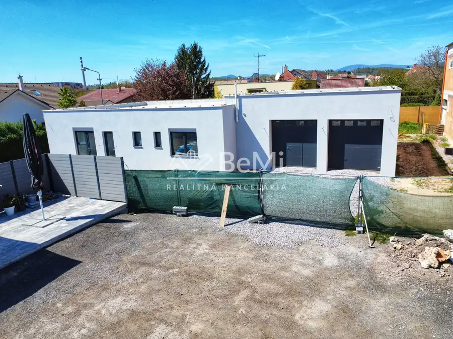
- StavVo výstavbe
- VlastníctvoOsobné
O nehnuteľnosti
Ponúkame na predaj rozostavanú stavbu s obrovským potenciálom v Zlatých Moravciach, na Továrenskej ulici.Nehnuteľnosť je ideálnou voľbou pre tých, ktorí hľadajú priestor na bývanie spojené s podnikaním alebo zaujímavý investičný projekt s možnosťou ďalšieho rozvoja.Základné parametre:Pozemok: cca 800 m² – rovinatý a slnečnýObytná časť: 160 m²Garáž / technická časť: 90 m² (vhodné aj ako dielňa alebo sklad)Prístup: unikátny prístup z dvoch strán – z Továrenskej aj z Hečkovej ulicePrečo je táto nehnuteľnosť výnimočná?1️⃣ Možnosť nadstavbyPodľa platného územného plánu mesta je možné nadstavať ďalšie dve podlažia, čo umožňuje vytvoriť bytový dom s viacerými jednotkami alebo reprezentatívne sídlo firmy.2️⃣ Flexibilita dokončeniaStavba je v štádiu, ktoré umožňuje realizáciu presne podľa vašich predstáv a potrieb.3️⃣ Parkovanie a zeleňRozloha pozemku poskytuje dostatok priestoru na vybudovanie súkromných parkovacích miest a zároveň zachovanie zelenej zóny v súlade s územným plánom.Lokalita:Strategická poloha v rámci mesta s rýchlym napojením na hlavné dopravné ťahy, pričom vďaka prístupu z bočnej uličky je možné zachovať dostatočné súkromie.Nehnuteľnosť je bez tiarch a pripravená na predaj.Odporúčame osobnú obhliadku, aby ste naplno ocenili potenciál tohto miesta.📞 Kontakt:Anna Fiťková0905 393 311 📱✉️ fitkova@realitybemi.skCena je vrátane provízie a kompletného právneho servisu.S financovaním Vám radi pomôžeme prostredníctvom nášho finančného poradcu.
Parametre
- Druh
- Rodinný dom
- Dátum zverejnenia
- 24. 02. 2026
- Plocha pozemku
- 800 m²
- Počet nadzemných podlaží
- 1
- Stav nehnuteľnosti
- Vo výstavbe
- Typ
- Predaj
- Typ konštrukcie
- Tehlová
- Vlastníctvo
- Osobné
- Vybavenie
- Terasa
- Úžitková plocha
- 0 m²
Kde to je


Mohlo by Vás zaujímať
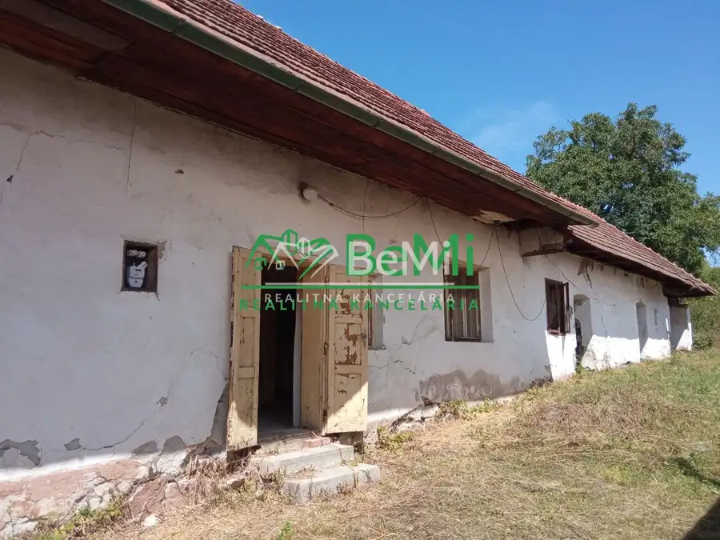
DomNové 49 000 €Predaj, vidiecký dom - Čaradice (1128-12-AFI) Čaradice 100 m²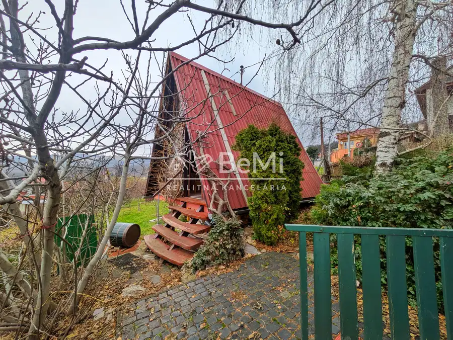
Chalupa, rekreačný domčekNové 206 000 €Predaj, chatka s pozemkom - Nitra /Zobor (1239-13-AFI) Nitra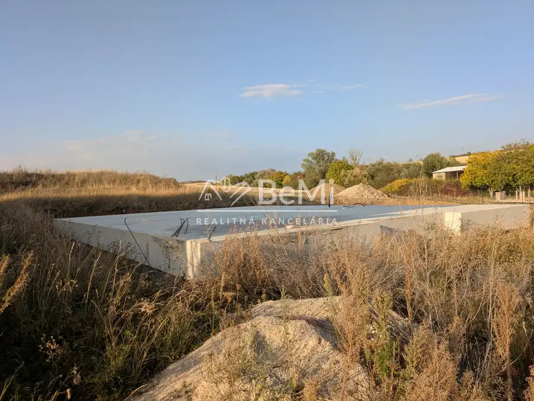
PozemokNové 91 900 €Predaj, stavebný pozemok - Martin nad Žitavou (1270-14-AFI) Martin nad Žitavou 827 m²